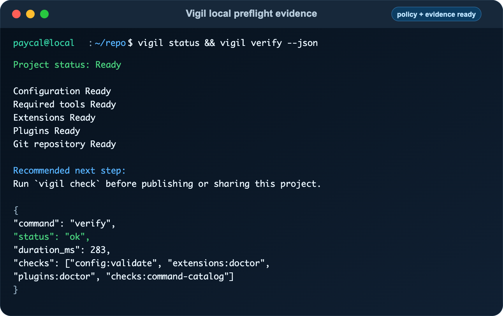

Testing
Vigil Testing Guide
How to run Vigil's local, CI, fuzz, performance, release, and acceptance test suites.

Quick Start#
Run the default test suite from the repository root.
go test ./...For a normal Go change, format the touched files and run the full package suite.
gofmt -w <changed .go files>
go test ./...For changes touching command execution, plugins, plans, output formats, release tooling, schema files, or safety policy, use the broader local matrix.
go test ./...
go test -race ./...
go vet ./...
scripts/run-fuzz-smoke.sh
scripts/check-performance.shCI Quality Matrix#
The main workflow runs on Ubuntu and macOS. It checks formatting, GitHub Actions syntax, shell syntax, unit and black-box tests, race detection, fuzz smoke targets, vet, staticcheck, govulncheck, a release-like build, startup performance budgets, plugin conformance, vigil verify --json, vigil workflow:local --json, release reproducibility, and clean-directory binary behavior.
Suite Map#
| Area | What It Protects |
|---|---|
cmd/vigil | CLI dispatch, command registry behavior, mutation confirmation, workflows, plans, hooks, setup, plugins, pack commands, help output, and machine output adapters. |
internal/acceptance and internal/contracts | v1 acceptance ledgers, published schemas, release workflow policy, output contracts, and compatibility fixtures. |
internal/runner | Direct argv execution, explicit shell mode, timeouts, cancellation, process groups, output truncation, and command-line parsing fuzzing. |
internal/plugins | Plugin lifecycle, digest pinning, signed indexes, trust and revocation, HTTPS acquisition, conformance, and strict protocol fuzzing. |
internal/git | Mutation fingerprints, dirty submodules, large dirty repositories, special files, and Git status parsing. |
internal/output | JSON, JSONL, JUnit, SARIF, GitHub annotations, output envelopes, escaping, and status mapping. |
internal/config, internal/plan, internal/support | Config migration, reviewed plan integrity, private file reads/writes, support bundle redaction, and symlink or oversize rejection. |
Fuzz Smoke#
Vigil has fuzz targets for config round trips, pack manifest parsing, path confinement, command-line parsing, atomic file writes, plugin handshake JSON, and support bundle redaction.
FUZZ_TIME=10s scripts/run-fuzz-smoke.shPerformance#
Startup latency is a release contract. The performance check builds a release-like binary and measures new-process commands in an empty directory with empty user pack and plugin roots.
scripts/check-performance.sh| Operation | Median Budget |
|---|---|
vigil version | 20 ms |
vigil help | 50 ms |
vigil list --json | 100 ms |
vigil setup --dry-run --json | 500 ms |
Release Checks#
Release testing covers tag-bound builds, reproducible archives, schema packaging, acceptance gate reports, checksums, native smoke tests, and Homebrew formula generation.
RELEASE_TAG=v0.0.0-quality.1 VERSION=0.0.0-quality.1 ALLOW_UNTAGGED_RELEASE=1 scripts/build-release.sh
scripts/check-release-reproducibility.sh distCommon Failures#
- Golden fixture changed: regenerate only when the compatibility change is intentional and reviewed.
- Race detector failed: treat it as a correctness bug around shared maps, slices, caches, process state, or globals.
- Mutation violation: a read-only command changed the Git-visible workspace; either fix the write or change the command contract with explicit approval.
- Performance regression: re-run on an idle machine, then separate process startup cost from discovery work.